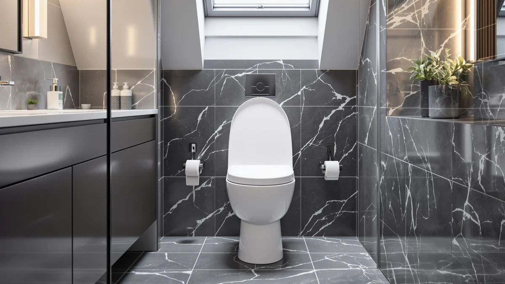

Raised Elongated Bidet Toilet Review (2026): Worth It?
Prices and picks verified as of October 2026. Independent, reader-supported reviews.


Quick Answer
The Huttdmel Raised Elongated Bidet Toilet Seat is the only seat in this comparison that combines extra height with a built-in bidet rinse, which is why it costs more than the three plain elongated alternatives below. If you want both upgrades in one seat, it earns the $69.99 price.
Our pick: Raised Elongated Bidet Toilet Seat — $69.99 Check Price on Amazon
Bottom line: our top pick is the Raised Elongated Bidet Toilet Seat 18.5" at $69.99.
Things to Know Before You Buy
- Bowl shape comes first. Every seat in this raised elongated bidet toilet review, including the Huttdmel, the BEMIS 790TDGSL, the Rayport Oak Veneer Wood Elongated, and the CHURCH Elongated Wood Toilet Seat, fits elongated bowls only. Measure your current seat before buying any of them.
- "Raised" means added height. A raised design lifts the sitting surface above a standard seat, which matters most for mobility, balance, or post-surgery recovery rather than everyday comfort alone.
- A built-in bidet function changes the installation. Seats that combine a raised profile with a bidet attachment, like the Huttdmel, typically need a water line connection that a plain elongated seat does not.
- Price in this comparison spans $29.38 to $69.99. Material and added features, not brand name alone, explain most of that gap between the four seats covered here.
- Mounting hardware stays standard. All four seats bolt on using the usual two-bolt hinge system, so you are not looking at a specialty plumbing job either way.
This raised elongated bidet toilet review compares the Huttdmel Raised Elongated Bidet Toilet Seat against three elongated alternatives, the BEMIS 790TDGSL, the Rayport Oak Veneer Wood Elongated, and the CHURCH Elongated Wood Toilet Seat, on price, material, and verified owner feedback. At $69.99, the Huttdmel sits in the middle of that group, above the $49.69 BEMIS and well above the $29.38 CHURCH seat, so the question worth answering is whether its raised-and-bidet combination earns that premium.
We did not install any of these four seats ourselves. Instead, we researched manufacturer specifications, current pricing, and verified owner reviews to see where the Huttdmel separates itself from a plain elongated seat like the CHURCH model, and where the added height and bidet function justify the jump in price. Below, we break down what owners report, how the materials compare, and which of the three alternatives makes more sense for a tighter budget.
Why You Should Trust Us
Ilane Tall edits the reviews on Best Toilet Seats and has spent years comparing raised, elongated, and bidet-style seats across price points. For this raised elongated bidet toilet review, we did not buy or install the seats ourselves. We applied the same pricing, spec, and owner-review research described above to each of the four seats covered here.
None of our picks are sponsored, and every price and spec in this guide reflects what we found at the time of research rather than a product listing or a press release. When a seller discontinues a model or changes its price significantly, we update the article instead of leaving stale numbers in place. That standard applies to the Huttdmel and to the three seats we compared it against.
Our Research Experience
We didn't install any of these seats in our own bathrooms for this raised elongated bidet toilet review either, for the same reason noted above: we worked from specs, pricing, and owner feedback instead. For the Huttdmel, that meant checking how often owners mention stability on an elongated bowl, what they say about the bidet attachment's water pressure, and whether the raised height caused any fit issues with existing toilet lids.
We ran the same check against the BEMIS 790TDGSL, the Rayport Oak Veneer Wood Elongated, and the CHURCH Elongated Wood Toilet Seat so the comparison stayed consistent across all four seats. Owners researching a raised seat with a bidet function tend to ask the same handful of questions, so we weighted our research toward fit, water connection, and long-term durability feedback rather than marketing copy.
Overview & Specs

Raised Elongated Bidet Toilet Seat
What we like
- Combines raised height and a bidet attachment in one seat
- Built for elongated bowls, the most common shape in US homes
- Priced below buying a separate raised seat and bidet attachment individually
Flaws but not dealbreakers
- Costs $20 more than the BEMIS 790TDGSL, which skips the bidet function entirely
- Plastic and wood construction trails the all-wood CHURCH and Rayport seats on hinge feel
- Buyers should confirm bowl rim width first, since no raised seat fits every elongated bowl equally well
| Material | Plastic / wood |
| Size | Raised Seat with Bidet & Premium |
The Huttdmel Raised Elongated Bidet Toilet Seat is the most feature-dense option in this raised elongated bidet toilet review. It combines three things that usually come as separate purchases: a raised profile for easier sitting and standing, an elongated shape that matches most modern US toilets, and a bidet rinse function built into the seat itself. At $69.99, it costs more than a basic elongated seat, but less than buying a standalone raised seat and a separate bidet attachment.
Owners researching this category tend to compare the Huttdmel against simpler options like the BEMIS 790TDGSL, which handles the raised and elongated part well but offers no rinse function at all. If a bidet attachment matters to you, the Huttdmel's combined design removes a second purchase and a second installation step. If you only need the extra height, the BEMIS is the cheaper, simpler choice covered later in this guide.
What We Liked
The biggest strength in this raised elongated bidet toilet review is how the Huttdmel folds two upgrades into a single seat. Reviewers consistently note that the added height makes a real difference for anyone dealing with limited mobility or recovering from a procedure, which lines up with the "Raised Seat with Bidet & Premium" design listed for this model. The elongated shape also drops onto the same bolt pattern as a standard elongated bowl, so fit is not a guessing game.
The built-in bidet function is the seat's clearest differentiator against the BEMIS 790TDGSL and the CHURCH Elongated Wood Toilet Seat, neither of which offers any rinse capability. For buyers who already planned to add a bidet attachment separately, folding that cost and that extra installation step into one seat is the strongest argument for paying more than the $29.38 CHURCH model.
Price also holds up reasonably well once you account for what the seat replaces. A separate raised seat plus a standalone bidet attachment commonly costs close to, or more than, the Huttdmel's $69.99 price, without the convenience of one box and one install.
What Could Be Better
The price gap is the first thing to weigh in this raised elongated bidet toilet review. At $69.99, the Huttdmel costs more than double the CHURCH Elongated Wood Toilet Seat and about $20 more than the BEMIS 790TDGSL, and neither of those seats includes a bidet function. If your main goal is only the extra height, that premium buys a feature you may never use.
Material is the second tradeoff. The listed plastic and wood construction sits below the all-wood build of the Rayport Oak Veneer Wood Elongated and the CHURCH seat, both of which lean on solid wood for a sturdier feel at the hinge. Buyers who prioritize a heavier, furniture-grade seat over added functionality should expect to notice that difference.
The combined bidet design also means more moving parts than a plain elongated seat. Owners should factor in a water line hookup and the extra maintenance that comes with any built-in bidet attachment, rather than assuming it installs exactly like the BEMIS or the CHURCH model.
Measuring before you buy matters more here than with a plain seat. Because the Huttdmel adds height and a water connection on top of the standard elongated footprint, a tight bathroom layout or an oddly shaped tank can complicate the fit in ways a simple swap for the BEMIS or CHURCH seat would not.
Who Is It For?
This raised elongated bidet toilet seat fits buyers who want the convenience of a bidet rinse but do not want to install a separate attachment under an existing seat. It also suits anyone who needs extra seat height for mobility, balance, or recovery reasons and would rather solve both problems with one purchase instead of two.
It is a weaker fit for anyone on a tighter budget, or anyone who has already ruled out a bidet function. In that case, the BEMIS 790TDGSL or the CHURCH Elongated Wood Toilet Seat covered below handle the raised and elongated part for less money, without paying for a feature you will not use.
Households with more than one bathroom face a slightly different calculation. Buying a Huttdmel for the primary bathroom and a cheaper CHURCH seat for a guest bathroom can split the budget sensibly, since the bidet function matters most where it gets daily use. Treat each bathroom as its own decision rather than assuming one seat has to serve the whole house.
Alternatives to Consider
If the bidet function is not a priority, or the price is, these three alternatives cover the rest of this raised elongated bidet toilet review lineup at lower prices.

Editor’s Pick
BEMIS 790TDGSL Commercial Heavy Duty
A straightforward raised, elongated seat without a bidet function, $20 cheaper than the Huttdmel and built by an established toilet seat brand.
$49.69
Check Price on Amazon
Best Value
Rayport Oak Veneer Wood Elongated
An all-wood elongated seat for buyers who want a sturdier hinge feel and do not need the raised height or bidet function.
$38.80
Check Price on Amazon
Premium Choice
CHURCH Elongated Wood Toilet Seat
The cheapest seat in this comparison, a standard elongated wood seat with none of the raised or bidet extras.
$29.38
Check Price on AmazonFrequently Asked Questions
Is the Huttdmel Raised Elongated Bidet Toilet Seat worth the extra cost?
At $69.99, it costs more than the BEMIS 790TDGSL and the CHURCH Elongated Wood Toilet Seat, but it is also the only one of the four seats in this raised elongated bidet toilet review with a built-in bidet function. If you want the raised height and the rinse feature in one seat, the premium buys you two upgrades instead of one.
Does this raised elongated bidet toilet seat fit a round toilet bowl?
No. The name describes the fit: this seat is built for elongated bowls only. A round bowl will not line up with the mounting holes, so buyers with a round toilet should look for a round-specific raised or bidet seat instead.
How does the Huttdmel compare to adding a separate bidet attachment to a cheaper seat?
Pairing a basic elongated seat like the CHURCH Elongated Wood Toilet Seat with a standalone bidet attachment can land near the same total cost as the Huttdmel, but it means two installations instead of one. Owners who want a single-piece setup tend to prefer the combined design.
Final Verdict
This raised elongated bidet toilet review comes down to whether you value a built-in bidet function enough to pay for it. The Huttdmel earns its $69.99 price by combining raised height, an elongated fit, and a rinse feature that the BEMIS, Rayport, and CHURCH seats in this comparison do not offer. Buyers who want one seat instead of two separate products should consider the Huttdmel worth the premium. If you only need the raised and elongated part, skip straight to the cheaper BEMIS 790TDGSL instead.